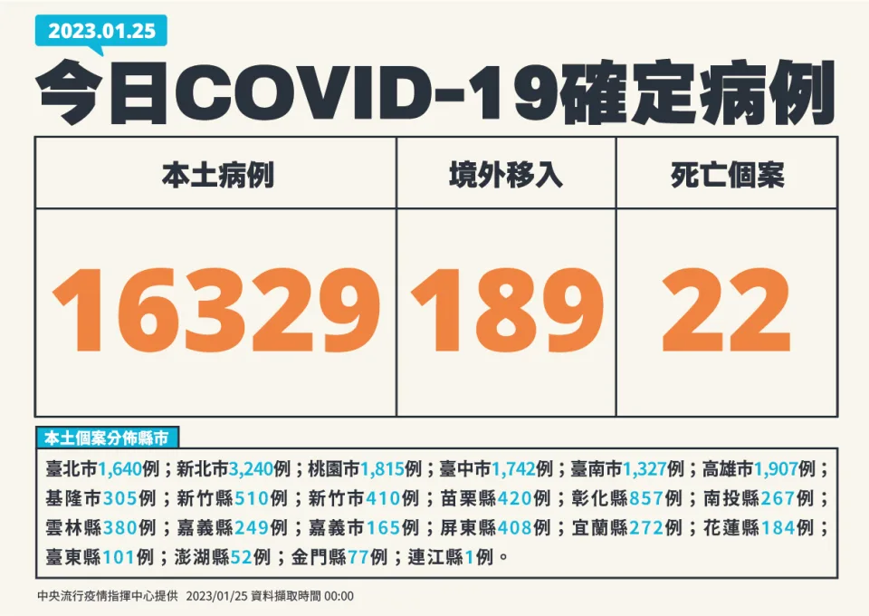
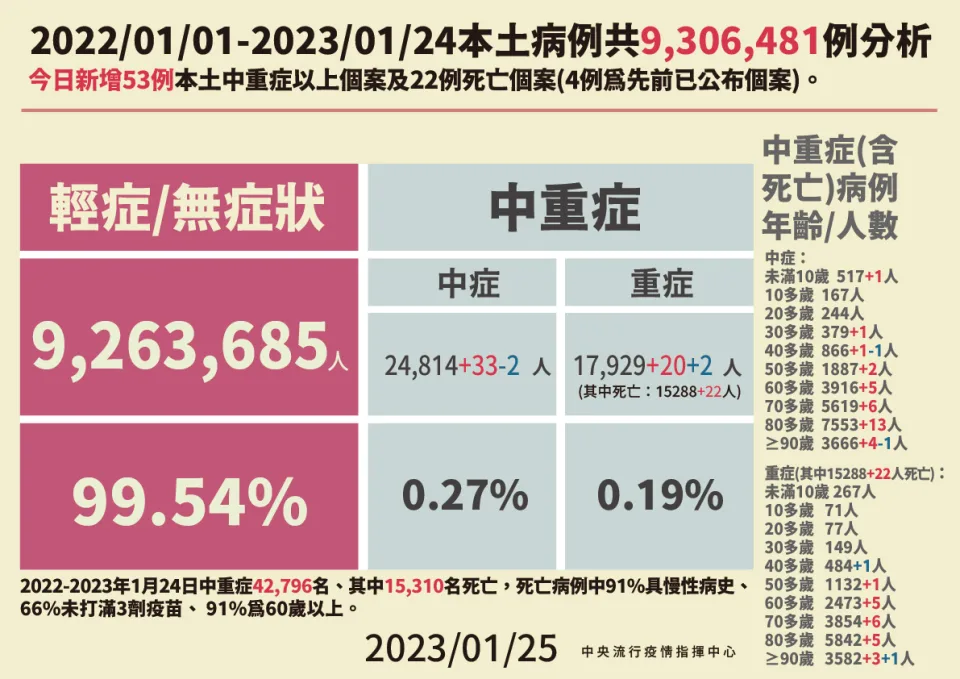

中央流行疫情指揮中心說明，今天新增1萬6329例COVID-19（2019冠狀病毒疾病）本土病例，確診個案增中重症53例，其中22人死亡；另外，境外移入增189例。其中有1名為4歲男童 ，曾接種1劑疫苗，確診2天後過世，死因為新冠病毒感染併急性腦炎、腦水腫、心肌炎及多重器官衰竭。

指揮中心提供
指揮中心表示，今日新增之16,329例本土病例，為7,147例男性、9,169例女性、13例調查中，年齡介於未滿5歲至90多歲以上； 個案分布為新北市(3,240例)，高雄市(1,907例)，桃園市(1,815例)，臺中市(1,742例)，臺北市(1,640例)，臺南市(1,327例)，彰化縣(857例)，新竹縣(510例)， 苗栗縣(420例)，新竹市(410例)，屏東縣(408例)，雲林縣(380例)，基隆市(305例)，宜蘭縣(272例)，南投縣(267例)， 嘉義縣(249例)，花蓮縣(184例)，嘉義市(165例)，臺東縣(101例)，金門縣(77例)，澎湖縣(52例)，連江縣(1例)。
